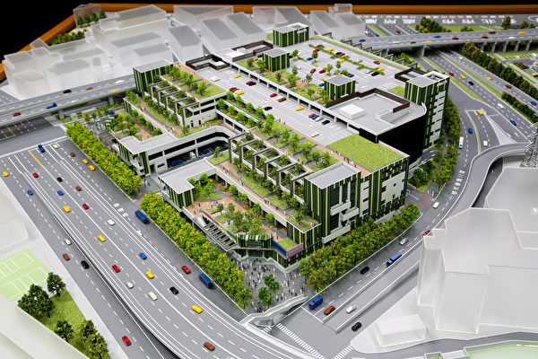
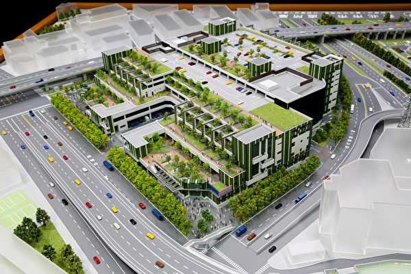

環南市場
環南市場自67年起啟用迄今逾40年，因市場建築物結構主體使用負荷過大、設備老舊且不符合現代化營運需求、環境不佳等問題，故於民國88年推動改建市場規劃，改善市場環境、打造符合採買需求的設備吸引年輕人回流。另為提升物流效率，亦規劃貨物運輸所需設施，包括大小型貨車卸貨車格、客貨梯及中央電動車斜坡道，以供攤商做為快速進出貨使用之動線系統，並設置停車格位提供採買民眾使用。市場營業性質為批發兼零售雜貨、食品加工、獸肉、漁產、家禽、蔬果等類貨品，為本市攤位最多、貨色最齊全之市場。
環南市場自67年起啟用迄今逾40年，因市場建築物結構主體使用負荷過大、設備老舊且不符合現代化營運需求、環境不佳等問題，故於民國88年推動改建市場規劃，改善市場環境、打造符合採買需求的設備吸引年輕人回流。另為提升物流效率，亦規劃貨物運輸所需設施，包括大小型貨車卸貨車格、客貨梯及中央電動車斜坡道，以供攤商做為快速進出貨使用之動線系統，並設置停車格位提供採買民眾使用。市場營業性質為批發兼零售雜貨、食品加工、獸肉、漁產、家禽、蔬果等類貨品，為本市攤位最多、貨色最齊全之市場。
